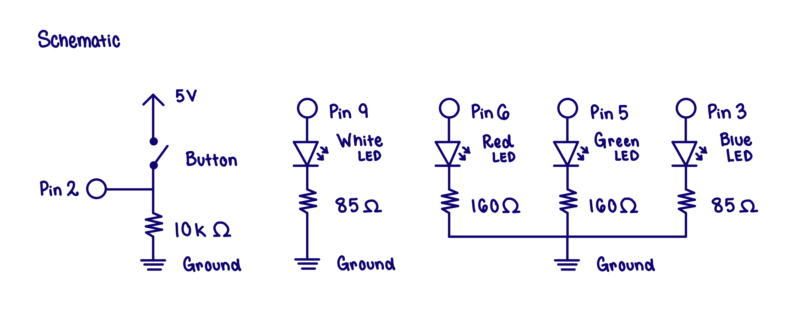

Back to Home Page
Assignment 2: Fade!


In my schematic, I have a button and 2 LEDs (white and RGB) connected to pins on the Arduino. I use resistors to control the current. CalculationsDetermining resistance and current for the button circuit.
Using Ohm's Law, I calculated the resistance needed so that 20 mA of current would flow through each LED. This is so that the LED can shine at its brightest. The Circuit